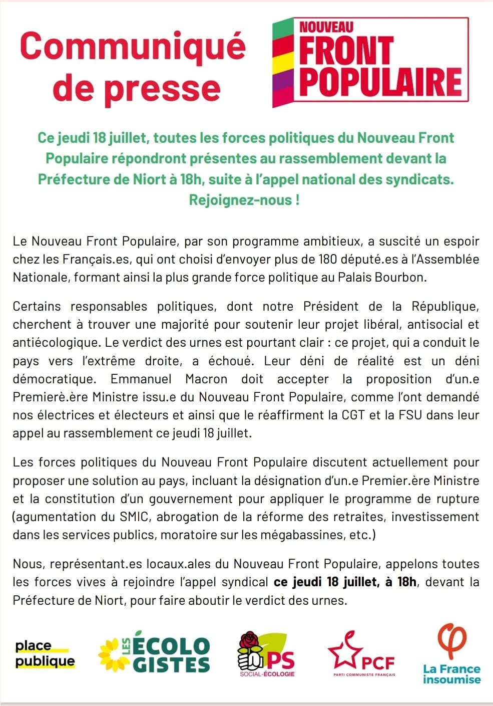

Appel commun archivé
À Niort le 18 juillet, le Nouveau Front populaire rejoint l’appel syndical
Date indiquée par Facebook · 17 juillet 2024
Repères éditoriaux
Les forces locales du Nouveau Front populaire, dont le PCF 79, appelaient à rejoindre le rassemblement du 18 juillet à 18 h devant la préfecture de Niort. Le communiqué situe ce rendez-vous dans la suite des législatives.
Texte conservé avec la publication
Communiqué des organisations du #nouveaufrontpopulaire appelant à rejoindre le rassemblement prévu par la CGT et la FSU ce jeudi 18 juillet devant la préfecture à #Niort

Sources
Archive rouge · export Facebook · AR-0002-FB-01318
À lire aussi · Après les législatives, notre communiqué du 9 juillet en Deux-Sèvres